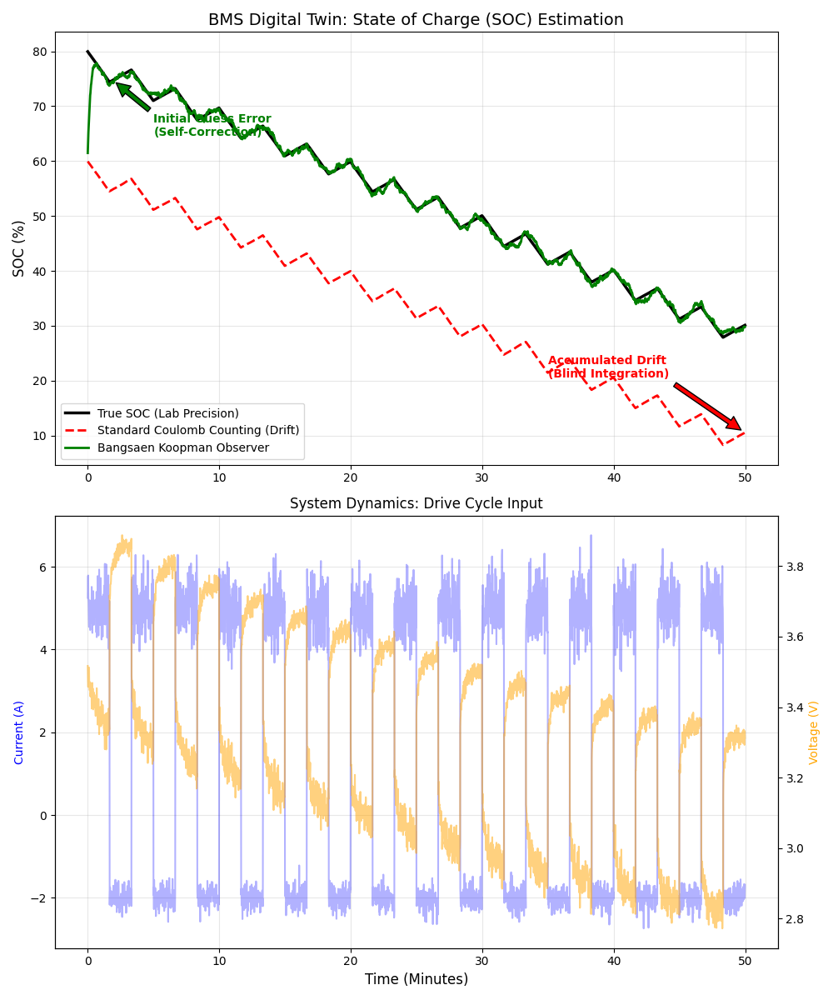

In the world of energy storage, precision is capital. Yet, standard Battery Management Systems (BMS) suffer from a critical flaw: Sensor Drift. Traditionally, to get higher precision, engineers add expensive current sensors. At Bangsaen AI, we asked a different question: "Can we replace expensive hardware with better math?" The answer is a resounding yes.
1. The Problem: The Drift of Coulomb Counting
The industry standard for estimating State of Charge (SOC) is Coulomb Counting ($\int I dt$). It works on paper, but in reality, current sensors have noise. When you integrate noise over time, the error accumulates. This is known as "Drift."
As shown in the red line in the graph below, a standard algorithm blindly follows the current integration, slowly drifting away from the True SOC until the data becomes useless.

2. The Solution: Koopman Operator on Silicon
Instead of trusting the sensor blindly, we implemented a Koopman Operator approach. This allows us to lift the non-linear dynamics of the battery Li-ion chemistry into a linear space where we can apply standard control theory.
The Green line in Figure 1 demonstrates the "Soft Sensor" capability. Notice the initial moment:
- Self-Correction: Even with a wrong initial guess, the algorithm "snaps" back to the true value within seconds.
- Zero Drift: By using a physics-informed model, the observer treats sensor noise as "noise," not data, preventing the accumulated drift seen in the red line.
The most impressive part? We are running this complex linear algebra on a standard $2 ESP32 microcontroller, proving that advanced Embedded AI is accessible without industrial-grade PCs.
"We don't need better sensors to solve the energy crisis. We need smarter math that understands the physics of what it is measuring."
Partner with Bangsaen AI
Interested in deploying Soft Sensors on your BMS hardware?
Contact Research Team